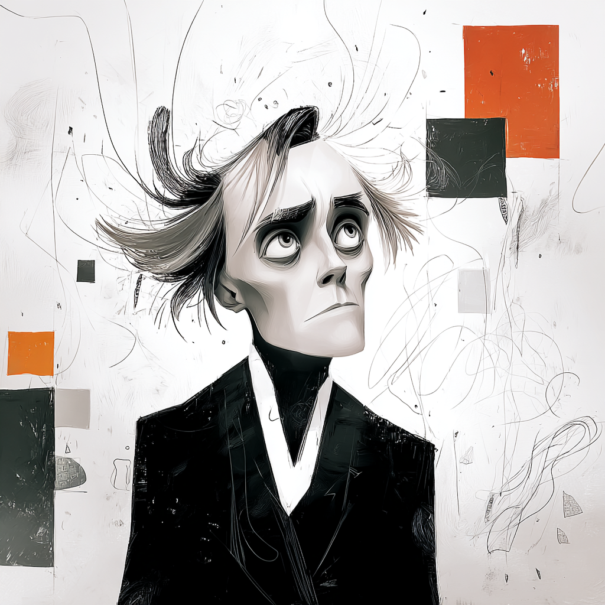
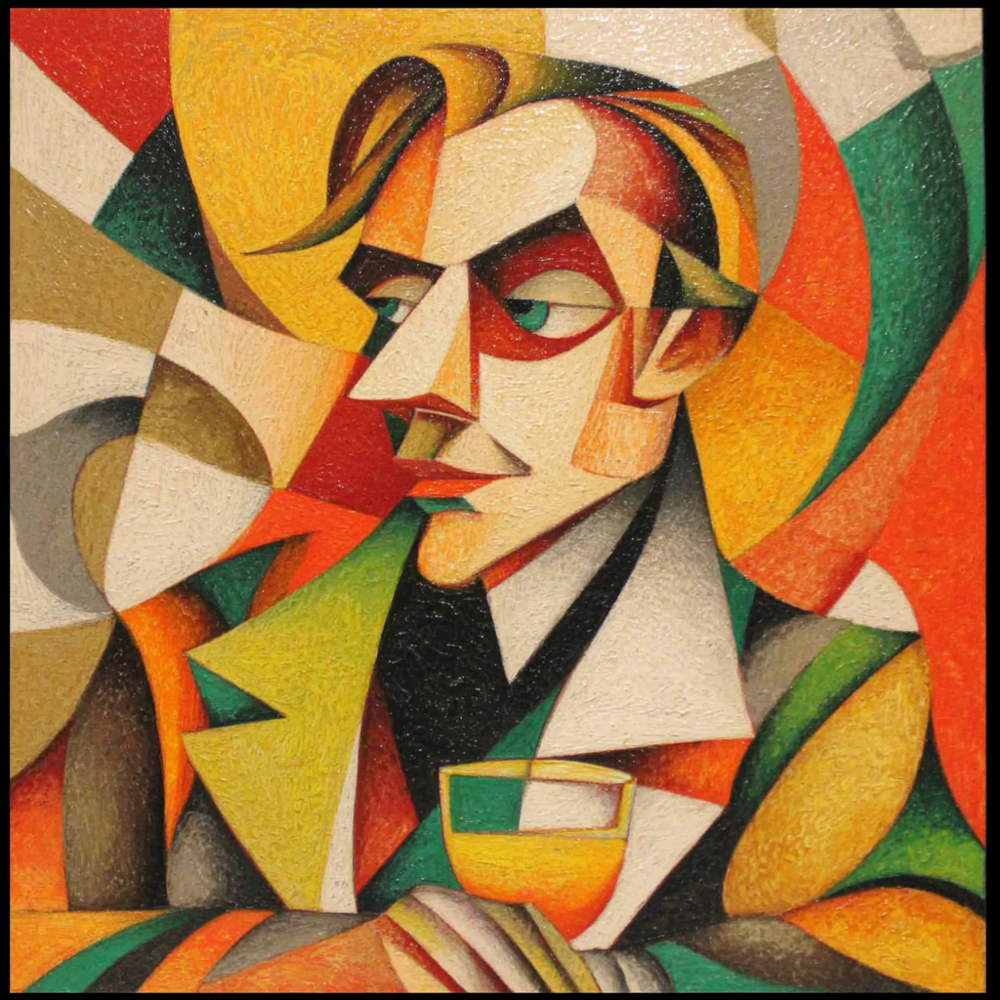

About


Anders Öhrn holds a PhD in computational chemistry from Lund University, where his dissertation work combined statistical mechanics with quantum mechanical methods to model solvent effects on electronically excited molecular states. His subsequent career has spanned computational biology, consumer electronics, and machine learning across research and industry settings in Europe, North America, and East Asia. At Zymeworks Inc., he founded and led the Integration team responsible for bridging technical domains in antibody engineering, contributing to the development of asymmetric antibody scaffolds subsequently integrated into oncology therapeutics. As CTO at Nanoleaf, he oversaw product development for LED illumination systems and led successful grant applications totalling $2M USD. His current work focuses on developing LLM-based analytical systems for technical landscape analysis, including agentic workflows, semantic search architectures, and methods for systematic style analysis and replication. He maintains active interests in literature, philosophy, and classical studies.
## What You'll Find Here
[PLACEHOLDER: Description of your site content - topics you write about, your approach]
1. A professional, comprising:
a quantitative foundation module configured to process inputs from chemistry, physics, mathematics, and statistics, wherein said foundation module is operatively coupled to a doctoral research unit adapted to model solvent effects on electronically excited molecular states using at least one of statistical mechanical methods and quantum mechanical methods;
a biotechnology experience layer disposed downstream of said foundation module, said biotechnology experience layer comprising an integration subunit configured to bridge a plurality of technical domains including but not limited to molecular dynamics, empirical scoring methods, machine learning methods trained on biological data, data visualization architectures, and resource optimization routines, wherein said integration subunit is further configured to output antibody scaffold constructs suitable for out-licensing to pharmaceutical entities;
a consumer electronics experience layer operatively connected to said biotechnology experience layer, said consumer electronics experience layer comprising a Chief Technology Officer functional block configured to manage at least one of patent prosecution, factory relationships, supplier coordination, grant applications having a value of approximately two million dollars, and product development pipelines, wherein said consumer electronics experience layer is further adapted to output at least one modular LED luminaire having a flat form factor suitable for distribution through premium retail channels;
a data science module configured to perform time-series analysis on near-realtime price data and to implement deep learning networks in at least one framework selected from the group consisting of Pytorch and equivalent tensor computation libraries;
a large language model interface layer configured to effectuate technical landscape analyses using sequence-to-sequence transformation methods, said interface layer being operatively coupled to semantic search means, agentic workflow means, and web application front-end means;
a cross-continental experience substrate extending across at least three geographic regions selected from Europe, North America, and East Asia; and
a humanities appreciation module configured to process literary inputs and to perform leaf-raking operations when monotony is the path;
wherein the professional is configured to navigate cross-currents comprising technology, human desires, bureaucracy, and markets, and wherein the word is the gift.
**Dependent Claims (for completeness)**
2. The professional of claim 1, wherein said doctoral research unit comprises fifteen peer-reviewed scientific publications.
3. The professional of claim 1, wherein said antibody scaffold constructs are asymmetric and exhibit high adaptability and manufacturability.
4. The professional of claim 1, wherein said modular LED luminaire is category-defining and subject to extensive counterfeiting.
5. The professional of claim 1, wherein said humanities appreciation module is further configured to discuss philosophy.
6. The professional of claim 1, wherein said foundation module was installed at Lund University, Sweden.
7. The professional of claim 1, further comprising a chaos tolerance subsystem adapted to operate under conditions wherein anyone with a heartbeat performs whatever tasks are necessary to advance efforts.
I've counted electrons in their quantum dance
And watched proteins fold like origami cranes,
Crossed continents in hope, and not by chance
Found junctions matter more than single lanes.
The clever trick is never quite enough—
What wins is navigation, not the map,
The will to work when working's mostly rough,
And bridge the ever-widening domain gap.
Three cities taught me this: Lund, Vancouver, Shenzhen,
Their factories and labs and library stacks,
That atoms become bits become words, and then
The word becomes the bridge that nothing lacks.
So now I build with language, glass, and leaf.
The gift is given. Hold it. Life is brief.
🚀 From quantum mechanics to consumer LEDs to LLMs—I've shipped products across three continents and raised $2M+ in non-dilutive funding.
💡 At Zymeworks, I built the Integration team from scratch, bridging science and business to create antibody scaffolds now in cancer drugs. At Nanoleaf, I took a concept sketch to a category-defining product sold in Apple Stores worldwide.
🔥 What I've learned: Technical sophistication rarely wins. Navigating the cross-currents of technology, human desires, bureaucracy, and markets—that's where the real game is played.
📚 PhD in computational chemistry. CTO experience. Patent strategist. Now building LLM-powered tools for technical analysis.
**Atoms and bits. Let's connect.**
## Areas of Expertise
- Startup growth
- Quantum mechanics
- Statistical mechanics
- Machine learning
- Antibody engineering
- Light-emitting diodes & luminaire design
- Natural language processing
- Natural language generation
- Semantic search
- Information retrieval
- Data science
- Python
- Data Visualization
- Internet of Things
- Product development
- Product management
- Business development